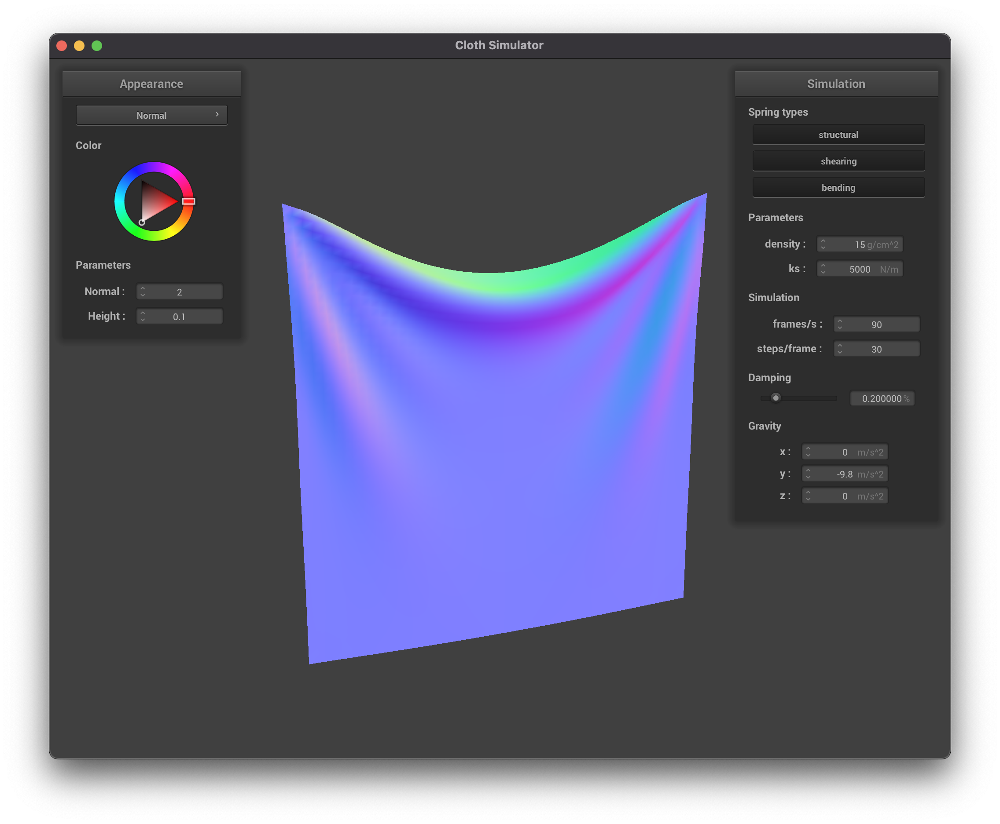

damping = 0.1%damping = 0.4%In this project, we implemented a real-time physical simulator for cloth. Our simulator uses a mass and spring model to enforce a variety of structural, shearing, and bending constraints on the cloth as well as additional synthetic forces to enforce self and world collisions on the cloth in order to provide realistic and natural cloth behavior. Additionally, we implemented a handful of GLSL shaders to support visually interesting cloth appearances as well as some special geometric transformations to support advanced texturing mechanisms like displacement mapping. Finally, we chose to extend our simulation with support for dynamic, non-uniform forces like wind as well as with a handful of custom shader modifications.
In this part, we implemented the cloth wireframe using masses and springs that simulated structural, shearing, and bending constraints.
scene/pinned2.json):| All Mesh Constraints | No Shearing Constraints |
| Only Shearing Constraints |
scene/pinned2.json: Default Parameters (ks = 5000, density = 15, dampling = 0.2% Default Parameters (ks = 5000, density = 15, dampling = 0.2%)
ks)The spring constant ks determines how much force is required to stretch each spring (when put together determines how stretchy/stiff/springy the cloth itself is). Therefore, as we expect, a large spring constant leads to a stiffer cloth and a smaller spring constant leads to a much thinner-like and bendy cloth. With a smaller ks we see the cloth ripple a lot more and as the cloth falls it has more bounce. As we can see, its final resting spot is very droops more and has sharper folds. A larger ks value has opposite results, and has a much smoother and less bouncy animation.
ks = 500 |
ks = 50000 |
The density determines the mass of each point of the mesh (since for all these examples the number of points per area is the same). As we increase the density, we see that cloth moves as if it is heavier: it ends with a deeper fold. Also, during the animation it seems to have more rippling and is less smooth. On the other hand, are smaller density value causes a much slower-feeling and smoother animation which rests with a very shallow fold.
density = 1.5 |
density = 150 |
For different values of damping the final position of the cloth remains the same. The only differences were with how fast the cloth fell and the amount of chaotic rippling in the cloth. With higher damping, the cloth moved much slower, but the animation was smooth and there was no rippling. However, with lower damping, the cloth was much more chaotic and it rippled a lot. It also swung back and forth once it reached the bottom.
damping = 0.1% |
damping = 0.4% |
damping = 0.1% |
damping = 0.4% |
pinned4.json pinned4.json: Default Parameters (ks = 5000, density = 15, dampling = 0.2%)
scene/sphere.json Collision ks = 500 |
ks = 5000 |
ks = 50000 |
The larger the ks spring constant is, the stiffer the cloth is. Larger spring constants correspond with cloth that doesn't stretch as much when it collides with the sphere and also form fewer folds. Smaller spring constants lead to the cloth stretching and drooping more, along with having more folds.
scene/plane.json Collision scene/plane.json: Default Parameters (ks = 5000, density = 15, dampling = 0.2%)
In this part we added support for cloth-cloth collisions. Collisions that happen due to the cloth interacting with itself, or self-collisions, are very important for realistic simulation. This is very much apparent when consider cases where the cloth falls on top of itself, such as when it is being dropped vertically:

Since this is a physically approximate simulation, we can adjust parameters like the backing spring constant and the cloth density and observe the effects through simulation. We first consider the behavior of adjusting the spring constant, Ks:
| 500 N/m | 5000 N/m | 50000 N/m |
|---|---|---|
From this, we can easily observe that, as expected, when the spring constant decreases (i.e. the spring is less stiff), the cloth more easily folds in on itself. This can be seen by the fact that low spring constant values have significantly more and smaller bends whereas stiffer materials are more resistant to bending and have only a few, very large and slow curves due to their higher spring constant.
We see a related effect when considering the same scenario except with a fixed spring constant and a variable cloth density:
| 1.5 g/cm^2 | 15 g/cm^2 | 150 g/cm^2 |
|---|---|---|
Here we can see an inverse pattern where increasing density yields smaller, more plentiful bends and lower density yields fewer, larger bends. This, again, makes perfect sense when considering the backing physics since a lower density mass will exert less force on the spring and, thus, will displace the spring a smaller distance.
A shader program is a special type of program that is targeted at a system's GPU rather than its CPU and, by nature, is intended to be massively parallel. This is very useful for implementing vertex shaders, or shaders that modify mesh geometry, and fragment shaders, or shaders that perform final point coloring. These two types of shader programs work together in a multi-phase render pipeline in which vertex shaders are applied first (to update geometry) and then fragment shaders are run (to determine individual point coloring). This order is important because it enables the updated geometry to impact lighting (i.e. displaced vertices can cast shadows) as it occurs in a later, dependent pass. We see this in action in the displacement map shader
The Blinn-Phong shader model is a fast (though not entirely physically accurate) perceptual approximation of lighting. It combines three core components in its lighting calculations, namely ambient lighting, diffuse reflection, and specular highlights. To better understand these components, we consider each in isolation:
First, we have the ambient lighting. Ambient lighting is the "generic" light in the scene. It accounts for the fact that in real scenes we have tend to have some minimal amount of light hitting everything due to chaotic scattering. For this reason, ambient lighting in the Blinn-Phong model adds a minimal amount of backing light to every point.
Next, we have diffuse, or uniform, reflection based lighting. This assumes that the material is fully mat and scatters all received light uniformly in all directions. The amount of light received is approximated by applying Lambert's cosine law to consider the proportion of the "surface" (or, rather, point) that is in the same direction as the incoming beam of light. A surface which is facing the light head-on will be fully bright whereas a surface that is parallel to the light receives none.
Finally, we consider the specular reflections. Specular reflections account for non-mat materials (such as glossy plastics) which have bright highlights. These highlights are sensitive to the camera position as they are derived proportional to the overlap of the mirror and camera vectors.
When all of these layers are additively combined, we end up with a nicely lit, somewhat shiny cloth as desired.
Next, we implemented texture mapping. This was largely a similar process as in project 1 (Rasterization) and merely involved looking up the fragment's (u, v) points in the texture map.
To show case our texture mapper, we present a wonderful simulated Oski tapestry. This is a great way to get a feel for how your various Oski-related decorations will look in your apartment before your splurge on a custom run of tapestries.
We also added support for both bump and displacement maps. The bump map modifies the surface normal for lighting purposes and the displacement map moves the actual, underlying vertices in accordance to the aforementioned bump map. To see these effects in more detail, we begin by considering the bump map on its own:
| Bump map (cloth) | Bump map (sphere) |
|---|---|
| Bump map (both) |
|---|
The effect of bump mapping is particularly clear when inspecting this last image of the cloth since we can see that the spectral lighting effects take on the hatched texture of some squares in the bump map due to the varying surface normal, as desired.
Next, we can turn on displacement mapping in addition to bump mapping. This moves the vertices of the scene objects outward along their normal according to the bump map:
| Displacement map (o,a=128) |
|---|
Here we can see that the sphere itself (i.e. not just the appearance) has hills and valleys in accordance with the depth map.
Notably, however, the displacement map is susceptible to geometry coarseness where the bump map alone is not:
| Displacement map (o,a=16) | Displacement map (o,a=128) |
|---|---|
 |
| Bump map (o,a=16) | Bump map (o,a=128) |
|---|---|
Here we can see that in the level 16 displacement map much of the ridged detail seen in the level 128 sphere has disappeared. We can also, however, observe that the bump map remains constant regardless of the coarseness. This happens because the displacement map vertex shader, as the name suggests, is run once per vertex whereas the the bump fragment shader is run once per sample. Thus, a larger number of vertices gives the displacement map more flexibility in fitting to the map and the bump fragment shader has no such issue since it is entirely disjoint from the vertex count.
Finally, we implemented the mirror shader. This shader uses an environment cube and colors all samples by reflecting a vector from the camera onto the sample surface and then back into the environment. This yields realistic and very pretty results:
| Sphere | Cloth |
|---|---|
We implemented a wind simulation as well which would move along the z-axis. To do this we added additional forces in that direction along with Perlin noise to simulate some of the randomness. For Perlin noise, we used the paper written by Ken Perlin for its implementation.
pinned4.json pinned4.json: Wind with Perlin Noise |
pinned4.json: Wind with Perlin Noise |
 pinned4.json: Wind with Perlin Noise |
We implemented a custom shader which combines texture, Phong shading, and displacement shading all in one.
scene/sphere.json scene/sphere.json: Custom Shader
We also implemented our shaders so that they would use the colors selected from the color wheel by multiplying our out_color with u_color.
scene/sphere.json scene/sphere.json: Colored Shader